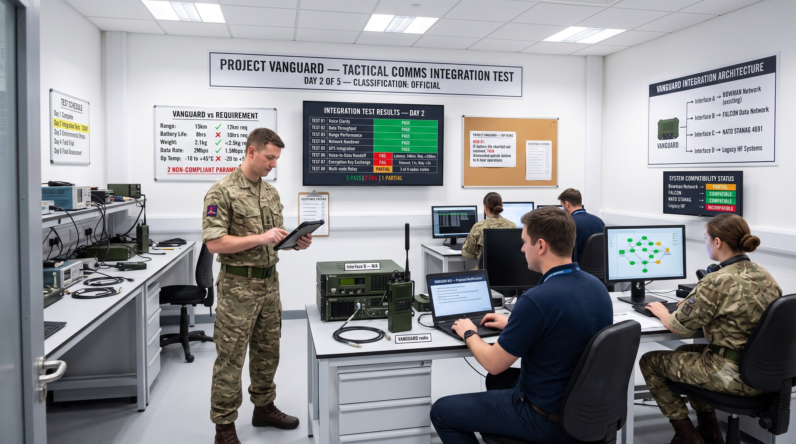

Objective competency assessment for military-to-industry transition. Evidence, not inference.
A server-side assessment platform that measures how senior military professionals think, decide and lead, then maps that evidence against the requirements of defence-industry roles.
AI reads. The framework scores. An LLM identifies which evidence a candidate raised; a deterministic weighted framework decides what it means.
When assessment is structured and scoring is deterministic, the same evidence produces the same result — regardless of who the candidate is.
Limited demo accounts available
Operational judgement, command decision-making and analytical rigour are compressed into job titles and dates. The substance is lost.
Two officers of identical rank can differ substantially in the competencies a director-level industry role actually requires. Rank does not distinguish them.
Mismatched hires, wasted capability, and transitions that fail in the first eighteen months.
Multi-dimensional measurement across six defence domains and nineteen competencies.
Candidates study rich operational imagery and demonstrate analytical thinking across four phases: Observe, Assess, Recommend, Anticipate.
Numerical, verbal and logical reasoning under timed, defence-contextualised conditions.
Objective fit scoring against eleven senior defence-industry role benchmarks.
A weighted evidence framework with calibrated thresholds. AI reads the response to identify evidence; the framework does the scoring, so the same evidence produces the same result every time.
This is not a quiz. Candidates are presented with realistic operational scenarios and work through them in four disciplined phases. What is measured is how they reason: the observations they prioritise, the inferences they draw, the courses of action they propose, and the second-order consequences they anticipate.
Because the scenarios reward reasoning rather than recall, the assessment cannot be rehearsed or gamed.
Early testers describe it as engaging — more like solving a real problem than taking a test.
What is present, and what matters.
What it means under uncertainty.
What action follows, and why.
What happens next, and what breaks.
A single operational environment, densely populated with real technical evidence. The candidate reads the room before responding.

A structured defence technology evaluation scenario testing technical evaluation and systems integration through observation of a tactical communications integration test programme.
You have arrived at a defence technology test laboratory where a new tactical communications system, Project VANGUARD, is undergoing integration testing with existing military communications infrastructure. This is Day 2 of a 5-day test programme, and the integration tests are in progress.
Your task is to study the room: the test results, specification boards, architecture diagrams, compatibility data, and how the evaluation is being conducted. Consider whether the system meets its requirements, how well it integrates with existing networks, and what the test findings mean for the programme.
You will respond across four phases: Observe, Assess, Recommend, and Anticipate. Take your time with the image before you begin.
Responses are free text. There are no options to choose from and nothing to eliminate. Candidates write as they would in a briefing, and can type or dictate their responses.
Illustrative briefing screen, one of 24 scenarios. Scenario content is shown for context only; the questions candidates answer, and everything that happens after a response is submitted, are not shown.
Competitors use AI as the scorer, so a candidate's result rests on a system that cannot explain its reasoning, cannot reproduce its own output, and cannot be audited. Pathfinder uses AI in exactly one step: reading candidate responses to identify which evidence elements were raised. Everything after that is deterministic. The LLM identifies what you said. The scoring engine decides what it means.
The language model performs one task: pattern-matching a free-text response against a defined set of evidence elements. It makes no judgement about quality, seniority or fit.
Once evidence is identified, a weighted framework with calibrated thresholds produces the result in code. Identical evidence yields an identical score on every run, for every candidate.
Every result traces back to specific evidence, specific weights and specific thresholds. Defensible to a hiring panel, an auditor, or a candidate who asks why.
Reads the response
Identifies which evidence elements the candidate raised.
Applies weights and thresholds
Deterministic code, no model judgement.
Traceable result
Every score attributable to the evidence behind it.
In structured rubrics, evidence weightings and calibrated thresholds held server-side, not in prompts. The platform was built through human-AI collaboration, which is an engineering fact rather than a feature claim; the assessment methodology is human-authored, domain-calibrated and explainable on its own terms.
The platform is built around three distinct perspectives that share a single competency evidence base. Each view is purpose-built for its user, and the same architecture serves every buyer type without customisation.
The hiring team. Manages assessment campaigns, reviews candidate evidence, compares competency fit scores against role benchmarks, and generates shortlists backed by data.
The person being assessed. Takes scenario and psychometric assessments, receives detailed competency reports, and sees how their profile maps against defence-industry career pathways.
The hiring authority. Sees aggregated candidate intelligence, manages roles and requirements, and makes informed decisions with competency evidence rather than CVs and interviews.
| Platform view | Defence prime | Defence VC | Government / MoD |
|---|---|---|---|
| Recruiter | Internal talent acquisition | Portfolio company talent team | Resettlement programme coordinator |
| Candidate | Ex-military applicant | Ex-military applicant | Service leaver |
| Client | Hiring manager / programme lead | Portfolio company | Department / force command |
The same platform, unmodified, serves each of these buyer types. The architecture is multi-tenant by design — a single deployment supports multiple organisations with role-based access and isolated data.
BAE · Leonardo · Thales · MBDA
Objective screening for director-level ex-military hires, with competency evidence that stands up to internal scrutiny.
Portfolio leadership
Identify and assess military talent for portfolio company leadership and advisory positions before commitment.
Transition programmes
Support resettlement and transition with credible, evidence-based career intelligence at individual and cohort level.
Pathfinder is not a first attempt. We build systems that operate inside organisations where an unexplainable output is not acceptable, and we design for scrutiny from the outset.
UK Fire & Rescue Services
In use by UK Fire and Rescue Services. Built to the same principle as Pathfinder: structured, explainable output that a public body can stand behind.
We work with organisations that operate under audit, procurement scrutiny and public accountability, and we build to those constraints rather than around them.
Every product we ship separates the reasoning a machine can help produce from the decisions a machine should not make on its own.
The clearest way to evaluate Pathfinder is to sit the candidate assessment yourself. Request an account and work a full scenario end to end.
Request accessLimited demo accounts available
For diligence materials, platform architecture, or discussion of investment and acquisition, contact us directly.
adam@generativeaisolutions.com